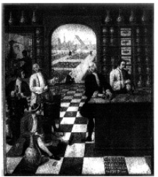

ŞEKİL 54. Rokoko dönemi eczanesinde reçete hazırlama masasında hekim ve eczacı ile birlikte ilaç hazırlamakta olan çıraklar; arka planda şifalı bitki bahçesi görülmektedir
(C. Couville’in yağlı boya tablosu, 1751).37
Eczane ve eczacı, meslekleri betimleyen resimli kitaplarda da yer almıştır. Çeşitli meslekleri tanıtan, ilk baskısı 1568’de yayımlanan ve kısaca Stände... olarak bilinen Stände und Handwerker (Eygentliche Beschreibung aller Stände auff Erden...) (Meslekler ve Zanaatkârlar Kitabı) adlı ilk büyük kitap dizisinde, Nürnberg’li ünlü grafikçi Jost Amman’ın (1539-1591) resimleri yer almaktadır. Bunun 1574’de yapılan ikinci baskısında yer alan resimlerden biri, ŞEKİL 55’te görülmektedir. Burada eczacı, taşınabilir bir ocakta (maltız) şurup hazırlamaktadır. Arkadaki rafta, ilaç hazırlama işinde gerekli olabilecek şeker kelleleri (konileri) görülmektedir ki şeker, yakın geçmişe dek ticarî olarak bu biçimde pazarlanmaktaydı. Şurup çanağı bir makaraya asılı olup fazla bir güç harcamadan kaldırılıp indirilebilmektedir. Sağ önde yakacak kömür, kömür maşası ve körük görülmektedir. Pencere kenarında dikine dayalı halde bir şekerleme kutusu bulunmaktadır. Ayrıca çeşitli toprak çanaklar, kutular ve cam kaplar da vardır. Bu kapların ağızları parşömen ya da domuz mesanesi (idrar torbası) ile kapatılmıştır. Burada dikkati çeken nokta, eczacının, bir ilaç satıcısı olmaktan çok, ilaç hazırlayıcısı olarak sergilenmesidir.50